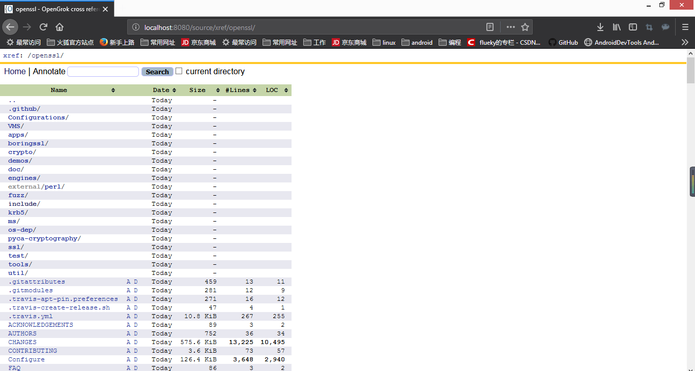
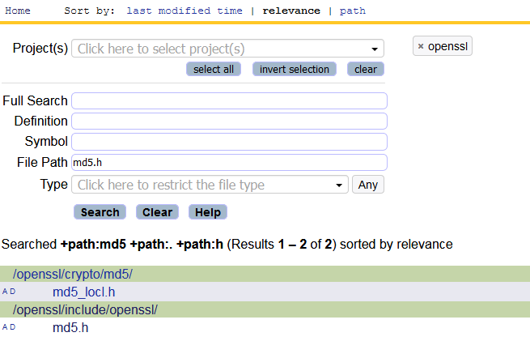

使用OpenGrok阅读源码
本想本周再写一篇关于Android的文章， 却忘了带工作电脑的充电器。上周主要从事了安卓源码的阅读工作，那么今天就来分享下Android源码的阅读总结。不要天真的以为这是篇介绍安卓源码的文章，毕竟一周的时间不足以产生更多的心得体会，而是介绍一种阅读源码的利器——OpenGrok。工欲善其事必先利其器！！！
其实在开发过程中，通常遇到一些阅读源码的工作。只不过由于代码量少的原因，使用IDE，如：AndroidStudio,和VSCode等文本编辑工具。但由于 AOSP (Android Open Source Project)的代码体系巨大，使用上述工具显得力不从心，那么请使用OpenGrok。
1 准备工作
1.1 Java 环境
这是每个使用Java语言开发者必须安装的开发环境，如果你是c/c++等其他语言的开发者，请参阅[安装Java环境](/blog/2018-08-01)。
1.2 Tomcat 服务
Tomcat 服务器是一个免费的开放源代码的 Web 应用服务器，属于轻量级应用服务器。
下载地址：
windows/mac/linux 通用 apache-tomcat-9.0.14.zip
windows 64 专用 apache-tomcat-9.0.14-windows-x64.zip
下载后解压在本地即可。
在tomcat的bin目录中找到startup.bat(windows)或startup.sh（mac/linux）文件，双击启动tomcat服务。
1.3 Universal Ctags
开源地址及安装教程见：https://github.com/universal-ctags/ctags
windows 系统选择下面的版本下载成功后解压到本地,并将解压后的路径添加至path环境变量。
mac系统使用命令进程安装。
1 | brew install --HEAD universal-ctags/universal-ctags/universal-ctags |
2 配置 Open Grok
2.1 下载
下载页面：https://github.com/oracle/opengrok/releases ,最新版本opengrok-1.1.2.tar.gz
2.2 解压 source.war
下载成功后解压在本地，将lib目录下的source.war文件解压到tomcat的webapps目录下。
2.3 添加 data root
data root 用于放置生成的索引文件和配置信息文件configuration.xml，建议在OpenGrok目录下新建data文件夹。
2.4 添加 source root
在OpenGrok目录下新建project文件夹作为 source root。OpenGrok认为source root目录下的每个文件夹都是一个项目。可以根据此特性添加多个项目。
2.5 配置configuration.xml
- 生成configuration.xml
1 | java -jar opengrok/lib/opengrok.jar -s opengork/project -d opengrok/data -W opengrok/data/configuration.xml |
命令中opengrok表示解压后的opengrok目录。
- 配置configuration.xml
在tomcat/webapps/source/WEB-INF/web.xml 修改CONFIGURATION变量，指向刚刚生成的configuration.xml文件路径。比如，楼主电脑的配置如下。
1 | <display-name>OpenGrok</display-name> |
2.6 启动OpenGrok
完成上述操作之后，在浏览器中输入 http://localhost:8080/source 浏览OpenGrok页面。
3 添加源码目录
由于本机没下载Android源码，在此使用OpenSSL源码演示。
OpenSSL地址：https://github.com/openssl/openssl
只需将需要阅读的原发放在OpenGrok的source root目录下。
在opengrok/project目录下执行下面的命令：
- windows
1 | mklink /J openssl openssl目录 |
- mac/linux
1 | ln -s openssl目录 openssl |
再建立索引
1 | java -jar opengrok/lib/opengrok.jar -P -S -v -s opengork/project -d opengrok/data -W opengrok/data/configuration.xml |
命令中opengrok表示解压后的opengrok目录。
重启tomcat服务，刷新页面 http://localhost:8080/source/
双击openssl，打开后的页面如下：
或者直接搜索某个文件：
在代码阅读页面，点击方法名和类名，亦会跳转搜索页面。
觉得有用？那打赏一个呗。[去打赏](/donate/)